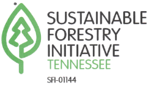

Tennessee
Biodiversity is a critical part of healthy forests. Find rare species in your area and support thriving ecosystems in Tennessee.
Select a county to filter. Hold down to select multiple. Tap “Select counties” to choose one or more counties.
Choose a species group to narrow down your search. Tap a species group to filter results. Tap again to deselect.
Choose one or more counties.